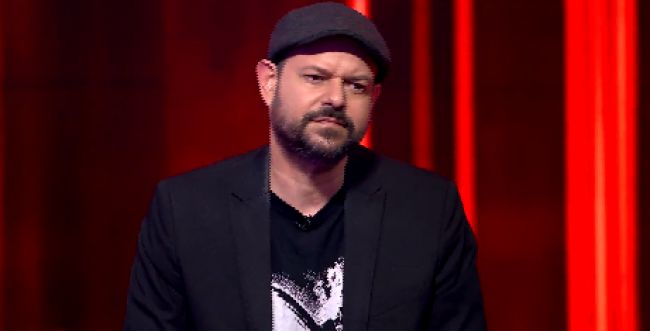

שאלון זה מכיל 20 שאלות ידע כללי ובסופו תדעו מה היא רמת הידע האקטואלי שלכם/ן. השאלות לקוחות ממגוון נושאים. כמות התשובות הנכונות שלכם/ן היא זו שתקבע. לכל שאלה יש 4 אפשרויות, עליכם לבחור תשובה אחת נכונה לדעתכם/ן ולרשום אותה על דף. ע"מ לראות את 4 התשובות יש לכוון את העכבר על השאלה הרצויה ולהשאיר אותו מכוון עליה, לאחר שבחרתם/ן תשובה יש לרדת מעט עם העכבר לשאלה הבאה. בסוף השאלון מופיעות התשובות הנכונות.

שאלות
1. מה הם ראשי התיבות WHO?
א- World Health Organization ב- We H&O ג- Wireless High Optic ד- We Hope Obtain
2. מי הוא מלך השערים של ליגת האלופות בכל הזמנים?
א- לאו מסי ב- כריסטיאנו רונאלדו ג- פליפו אינזגי ד- ראול
3. מה היא ארץ הייצור של הוזלין?
א- פולין ב- אנגליה ג- גרמניה ד- ארצות הברית
4. למה תורם בעיקר ויטמין B12?
א- לעירנות ב- לשרירים ג- למערכת החיסון ד- לעור
5. מה הוא שיר השנה של 2017 במצעד של גלגלצ בשירים הלועזים?
א- Shape Of You ב- Despacito ג- Believer ד- Million Years Ago
6. מתי חל יום האהבה היהודי?
א- י' באדר ב- י'ג ניסן ג- ט'ו באב ד- כ' בתשרי
7. לאיזה יצרן רכב שייך הדגם C4?
א- רנו ב- פורד ג- ניסן ד- סיטרואן
8. מי מהקבוצות הבאות אף פעם לא זכתה בליגת האלופות?
א- ארסנל ב- בורוסיה דורטמונד ג- פורטו ד- צ'לסי
9.מי הוא מאמן ליברפול?
א- ז'וסה מוריניו ב- קרלו אנצ'לוטי ג- יורגן קלופ ד- פפ גוארדיולה
10. איזו מהשפות הבאות אינה שפת תכנות?
א- Html ב- Java Script ג- C ד- Python
11. מה הכוונה בצמד המילים good practice בהקשר של תכנות?
א- לכתוב קוד בצורה שהעיצוב יראה טוב ב- לכתוב קוד בצורה נכונה ג- לכתוב קוד מאובטח ד- לכתוב קוד בצד לקוח
12. למי שייך עיתון הJerusalem Post?
א- ישראל היום ב- ידיעות אחרונות ג- הארץ ד- מעריב
13. מי הוא האדריכל שתכנן את התחנה המרכזית החדשה בתל אביב?
א- רם כרמי ב- אילן פיבקו ג- אורלי שרם ד- פיצו קדם
14. מה הוא מספר החברים המקסימלי בקבוצת ווצאפ?
א- 100 ב- 256 ג- 300 ד- 230
15. כמה שיניים יש לאדם בוגר?
א- 32 ב- 25 ג- 40 ד- 28
16. באיזו שנה נכנסה לפעילות הרכבת הקלה בירושלים?
א- 2009 ב- 2013 ג- 2011 ד- 2007
17. מי הוא המתכנן של שפת התכנות Java Script?
א- ברנדן אייך ב- דניס ריצ'י ג- ג'יימס גוסלינג ד- כריס לטנר
18. מי הקבוצה עם הכי הרבה תארים בליגה הספרדית בכדורגל?
א- ברצלונה ב- אתלטיקו מדריד ג- ריאל מדריד ד- ולנסיה
19. מה הוא שמו של הילד בסרט אבא גנוב(בסרט עצמו)?
א- בן ב- מיקו ג- דוד ד- יוני
20. מי מהקבוצות הבאות אינה מלונדון?
א- צ'לסי ב- טוטנהם ג- ארסנל ד- לידס